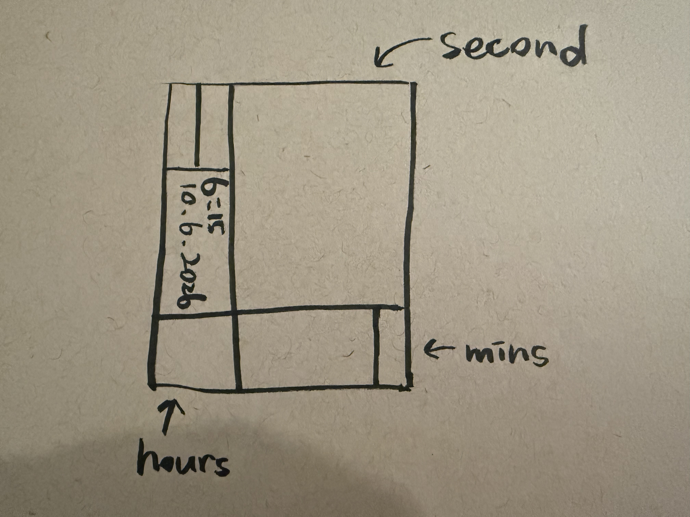
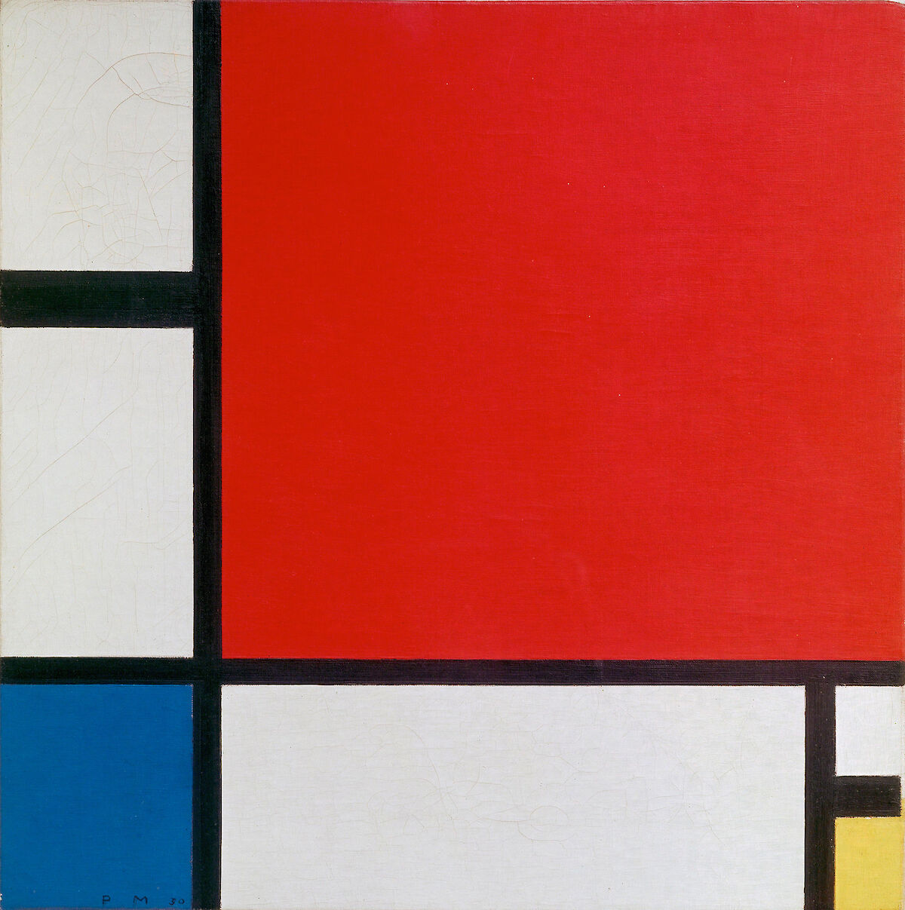
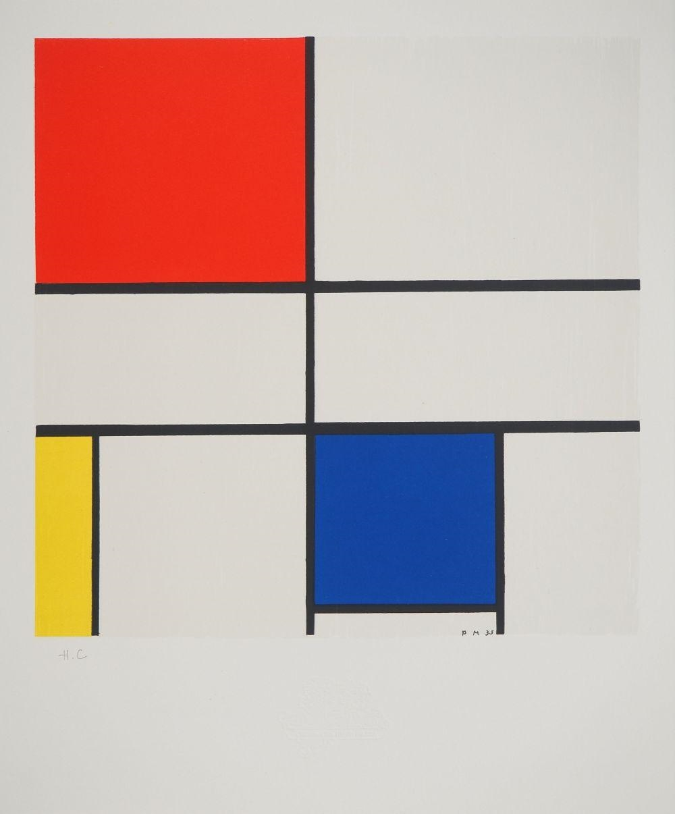

My work is titled “Composition Clocks,” an abstract clock. It was inspired by Mondrian’s “Composition with Red, Blue, and Yellow.” I retained the original’s use of black horizontal and vertical lines to divide the composition. At the same time, I made some subtle adjustments to the arrangement of colors and lines so that the three color areas represent seconds, hours, and minutes, respectively. The blue area in the upper right displays the seconds by layering rectangles inward, adding one layer per second. It counts from 1 to 60 layers, then resets to 1 at the start of the next minute. The blue transitions from light to dark and back to light, creating a sense of depth. The red area in the lower left divides the day into four segments, switching to a different shade of red every six hours. The yellow area in the lower right gradually fills from bottom to top as the minutes increase. The vertically aligned text on the left displays the current time and date. In the code, I use `hour()`, `minute()`, and `second()` to read the time. I also use a `for` loop to draw rectangles, control color changes with `if` statements, and use `map()` to convert the number of minutes into the height of the yellow area. I hope viewers can not only read the exact time but also sense the passage of time through the changes in the different areas of the image.


